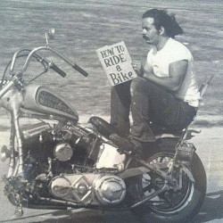

simple social network
😉سلام
این وبسایت یه شبکه ی اجتماعی است و با هدف تمرین و یادگیری ایجاد شده
learing by doing : با شعار

که میگه شما با انجام دادن یه پروژه خیلی یاد میگیرید دقیقا
مثل من که با انجام
دادن این پروژه خیلی چیز در مورد بک اند یاد گرفتم
بعد تصمیم گرفتم بزارمش رو اینترنت که بقیه باهاش تمرین کنن
که جلوتر توضیح میدم که چجوری میشه
اینجا میتونه برای شما بسته به رشته ی برنامه نویسی که هستید مفید باشه
👇
فرانت اند و موبایل
شما میتونید با توسعه دادن اپلیکیشن کلاینت اتصال به سرور رو تمرین کنید
شما اینجا کلیک کن
هک و امنیت
شما میتونید حملاتی که رو کاغذ بلدید و تا حالا امتحان نکردید رو روی این وبسایت
ازادانه امتحان کنید
شما هام اینجا کلیک کنید
بک اند
شما میتونید با خوندن کد های بک اند ببینید من چجوری نوشتم فقط به شرطی که اگه
پروژه بک اند اوپن سورس دارید بفرستید که منم ببینم شما چجوری مینویسید
شمام که اینجا کلیک کنید
بازی کنم API فقط میخوام با
باعشه🙂
شمام هر جا دوست داشتی کلیک کن
:پ ن
این صفحه با الهام گیری از وبسایت های دهه نود میلادی توسعه داده شده